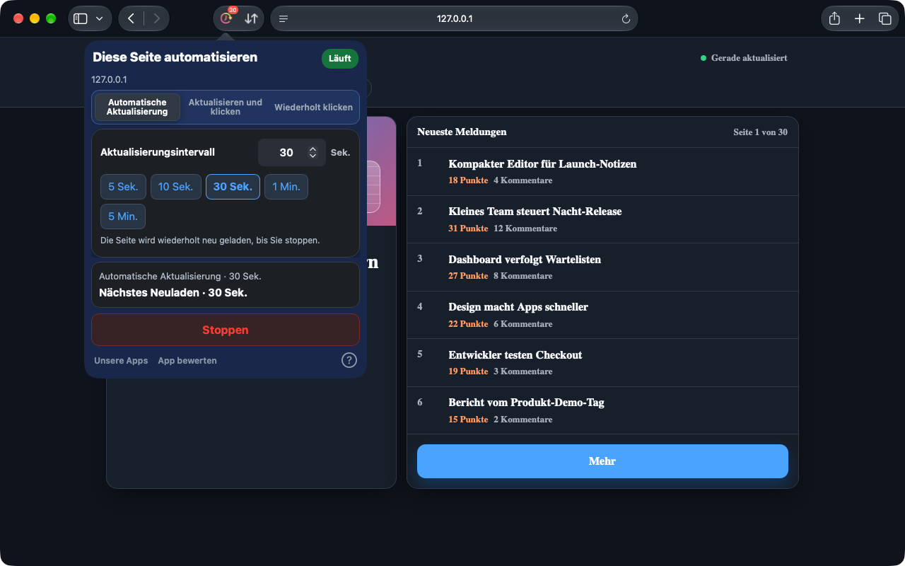
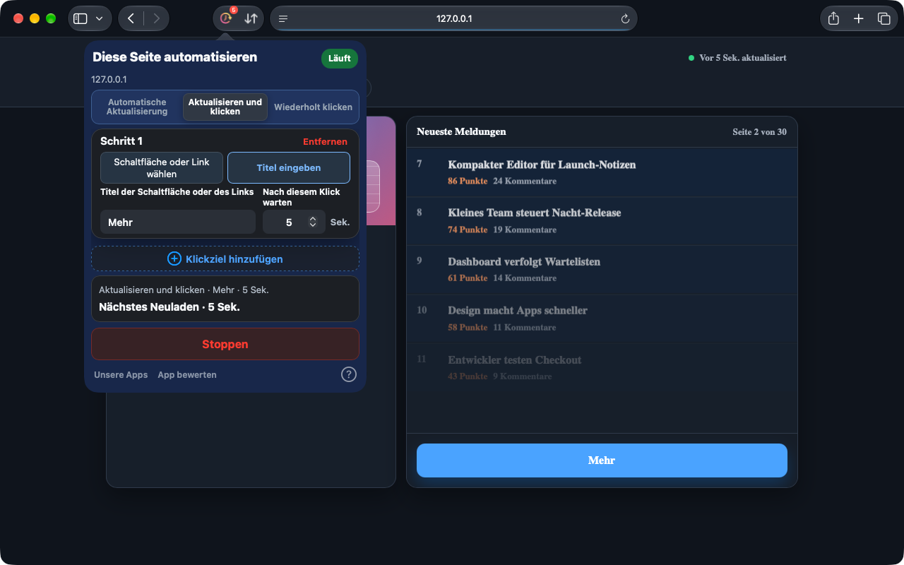
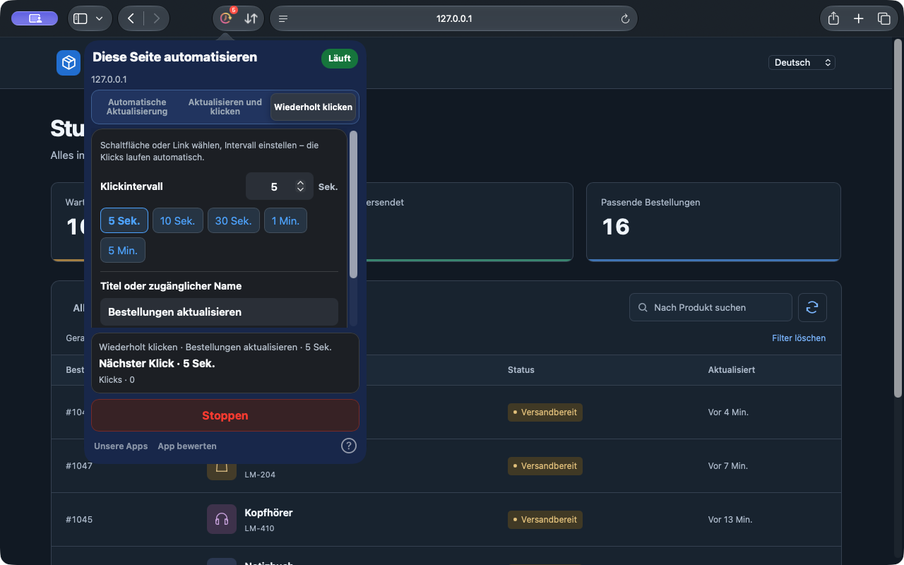

Automatische Aktualisierung
Wählen Sie ein voreingestelltes oder genaues Intervall für Dashboards, Bestände und Statusseiten.
Automatische Aktualisierung einrichtenLade eine Safari-Seite in festen Abständen neu. Soll nur die Liste aktualisiert werden? Wähle ihren Aktualisieren-Button aus. Die Erweiterung klickt für dich und deine Filter bleiben erhalten.
Safari auf iPhone, iPad und Mac. Chrome auf dem Computer.
So funktioniert es
Wählen Sie ein voreingestelltes oder genaues Intervall für Dashboards, Bestände und Statusseiten.
Automatische Aktualisierung einrichten
Schaltfläche oder Link auf der Seite wählen oder den Titel eingeben. Nach jedem Neuladen folgen Ihre Klicks mit einer Wartezeit nach jedem Schritt.
Aktualisieren und Klicken einrichten
Klicks wiederholen, ohne die Seite neu zu laden. Auch Symbolschaltflächen lassen sich auswählen. Intervall einstellen und die Liste aktualisieren lassen.
Wiederholte Klicks einrichtenIn wenigen Schritten eingerichtet, mit klarem Blick auf den Status.
Öffnen Sie die installierte App. Aktivieren Sie die Erweiterung in den Safari-Einstellungen und erlauben Sie den Website-Zugriff.
Wählen Sie den Modus und stellen Sie das Intervall oder die Wartezeit je Schritt ein. Wählen Sie bei Bedarf einen Button oder Link auf der Seite aus oder geben Sie seinen Titel ein.
Starten Sie und prüfen Sie Status und Countdown. Sie können jederzeit stoppen oder Änderungen anwenden.
Kein Webkonto nötig. Die Einstellungen werden lokal gespeichert; Aufgaben werden pro Tab verwaltet.
Lassen Sie Safari auf iPhone und iPad im Vordergrund. Im Hintergrund oder bei gesperrtem Gerät kann das System Aufgaben anhalten.
DatenschutzAufgaben laufen auf Webseiten in Safari oder in der Chrome-Erweiterung auf dem Computer. Andere Apps und Systemoberflächen werden nicht gesteuert.
Öffnen Sie die installierte App einmal und prüfen Sie Safari-Einstellungen → Erweiterungen. Verwenden Sie Safari 15.4 oder neuer. Fehlt sie weiterhin, senden Sie dem Support die macOS-, Safari- und App-Version sowie die Installationsquelle.
Ein durchgehender Hintergrundbetrieb ist nicht garantiert. iOS und iPadOS können Browseraufgaben anhalten. Lassen Sie Safari im Vordergrund.
In der aktuellen Safari-Version können Sie Einstellungen bearbeiten und Änderungen anwenden. Die Zusammenfassung zeigt die aktive Aufgabe. Mit Stoppen beenden Sie sie.
Safari auf iPhone, iPad und Mac. Chrome auf dem Computer.
Die Safari-App unterstützt jetzt die Auswahl von Symbolschaltflächen und wiederholte Klicks ohne Neuladen. Chrome wird separat aktualisiert; die verfügbaren Funktionen stehen im jeweiligen Store.
Aktuelle Preise und Kompatibilität finden Sie im jeweiligen Store.